Windows XP SP3, Windows 7 上でのメモリダンプ取得方法メモ。
基本的に "Debugging Tools for Windows" 無しの状態を想定しています。つまりユーザー環境でアプリケーションクラッシュやハングアップ、あるいはBSODが発生した瞬間を捕まえるための設定をメモしていきます。
なお一部のシナリオではMicrosoftから公開されている"UMPD : User Mode Process Dumper"というツールを使っています。
以下の環境で動作確認しています。いずれも日本語版のWindowsを使っています。
Windows XP SP3 : x86(32bit), Windows 7 上のXP Modeを利用 → Win2k, WinSrv2003 など Windows 7 : x86(32bit) → Vista, WinSrv2008 など
参考図書：
Amazon | Advanced .NET Debugging | Hewardt, Mario | Networking
Windowsダンプの極意 エラーが発生したら、まずダンプ解析! | 上原 祥市 |本 | 通販 | Amazon
- "AWD本" : "Advanced Windows Debugging"
- "ADND本" : "Advanced .NET Debugging"
- 「Windowsダンプの極意」：第１版第５刷
アプリケーションのメモリダンプ
アプリケーションのメモリダンプを取得する方法のメモ。クラッシュなど例外発生時に自動的に取得する方法と、任意のタイミングで取得する方法（デッドロックなどで無応答になったり、CPU100%などのハングアップ状態に陥ったとき）の二種に大別して紹介する。
UMPD : User Mode Process Dumper のインストール
UMPDが必要になる場面：
- 任意のタイミングでメモリダンプを取得したい
- クラッシュ時にワトソン博士ではダンプが取得できない（まれにあるらしい）。
対応OS：Win2k SP3,SP4/WinSrv2003 NonSP,SP1,SP2/WinXP SP1,SP2
他、WinXP SP3でも動くようです（当記事でWinXP SP3で確認）。
情報とダウンロード：
- Microsoft Support Professionals Toolkit for Windows
- Download details: User Mode Process Dumper Version 8.1
以降の記事では UserModeProcessDumper8_1_2929_5.exe を使っています。
インストール：
- ダウンロードリンクからexeをDLし、実行するとunzip解凍先が聞かれる。
- デフォルトでは "C:\kktools\userdump8.1" になっている。特に変更する必要がなければそのままunzip。
- クラッシュ時にダンプを取得させたい場合は、"userdump8.1"フォルダ以下の各アーキテクチャフォルダにあるsetup.exeを使ってシステムにインストールする。"%WINDOWS%\system32\kktools"以下にインストールされ、PATH環境変数にも同フォルダが自動で追加される。
- 任意のタイミングで取得したいだけであれば、setup.exeのインストールは不要です。
setup.exeからのインストールの流れ：
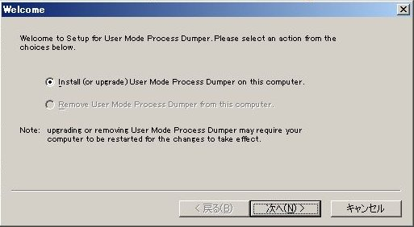
↓
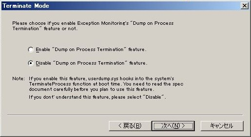
↓
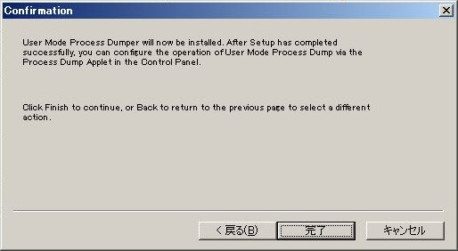
↓
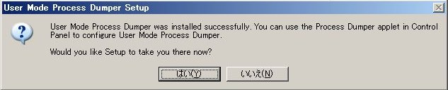
以上でインストールは終わり。使い方については以降の説明を参照。
ちなみに、UMPDには富士通・日立・日本ユニシス・NTTデータ・東芝が開発に関わっているようです。
アプリケーションクラッシュ時に取得
例外発生などでアプリケーションがクラッシュしたときに自動的にメモリダンプを取得する方法を紹介します。
Windows XP SP3 (ワトソン博士を使う場合)
参考：「Windows ダンプの極意」p50-51
１．ワトソン博士(OSが提供するデバッガ)がデフォルトのデバッガになっているかチェック。
> reg query "HKLM\Software\Microsoft\Windows NT\CurrentVersion\AeDebug" /v Debugger
...
Debugger REG_SZ drwtsn32 -p %ld -e %ld -g
^^^^^^^^^^^^^^^^^^^^^^^^^^ : O.K.
もしVisualStudioやDebugging Tools for Windowsのデバッガが設定されている場合は、
> drwtsn32 -i
とすることでワトソン博士に変更できる。
２．アプリケーションクラッシュ時に自動的にデバッガ(ワトソン博士)が起動することをチェック。
> reg query "HKLM\Software\Microsoft\Windows NT\CurrentVersion\AeDebug" /v Auto
...
Auto REG_SZ 1
^ : O.K.
"0"になっている場合は1に変更する。
３．ワトソン博士の設定をチェック。
ログファイルパス, クラッシュダンプのファイル名を確認。例：
ログファイルパス： C:\Documents and Settings\All Users\Application Data\Microsoft\Dr Watson クラッシュダンプファイル名： C:\Documents and Settings\All Users\Application Data\Microsoft\Dr Watson\user.dmp
クラッシュダンプの種類は「完全」を選択しておく。オプションはデフォルトのままにしておく。
下記スクリーンショット参照。
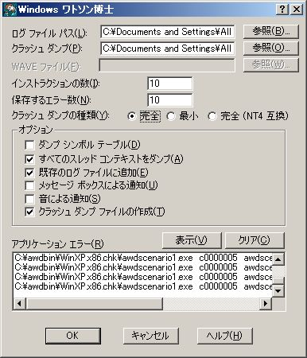
適当なアプリで例外を発生させると、ログがログファイルに記録され、ダンプファイルが作成される。ダンプファイルはwindbgなどで読み込むことが出来る。
※エラー報告機能の影響でアプリクラッシュが分かりづらい場合は、エラー報告を無効にする。
「マイコンピュータ」右クリック→「システムのプロパティ」→「詳細設定」タブ→「エラー報告」で「エラー報告を無効にする」を設定する。
Windows XP SP3 (UMPD : User Mode Process Dumper を使う場合)
参考：「Windows ダンプの極意」p54
ワトソン博士でダンプを取得できない場合があるらしい。その場合はUMPDを使う。
- UMPDをsetup.exeを使ってインストールする(前述)。
- コントロールパネルから「Process Dumper」を起動し、「Process Monitoring」タブを開き、クラッシュするアプリケーションおよびUMPDで補足したい例外の種類を設定する。
- アプリケーションを起動し、クラッシュさせるかクラッシュするのを待つ。クラッシュするとUMPDで設定したフォルダに「実行ファイル名＋PID＋".dmp"」というファイル名でダンプファイルが作成される。
設定例：AWD本のサンプル、02sample.exeを設定してみた。
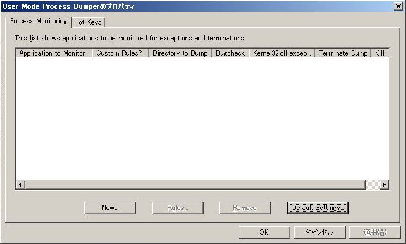
↓ "Add"ボタンをクリックしてアプリの実行ファイル名を指定する。
↓ アプリ毎に設定を調整したい場合は、「Process Monitoring」タブで追加したアプリ名をクリックし、下部「Rules」ボタンをクリック。
↓ 「Use custom rules」を選択し、調整する。（「Use default rules」の場合デフォルト設定が使われる。デフォルト設定は「Process Monitoring」タブ画面下部の「Default Settings」ボタンをクリックして開く設定画面から変更できる。）
Windows 7
参考：AWD本Chapter15, p743
Vista/Svr2008以降はWindows Error Reportingが大幅に改良され、ワトソン博士も外された。
- What's New in WER (Windows)
- http://msdn.microsoft.com/en-us/library/bb513640.aspx
- "MSDN Library" > "Windows Development" > "Diagnostics" > "Windows Error Reporting" > "What's New in WER"
- http://msdn.microsoft.com/en-us/library/bb513640.aspx
AWD本Chapter15, p743ではWER関連レジスタの"ForceQueue"値を編集することでダンプファイルをローカルに保存する方法が紹介されている。
本記事ではMSDNで紹介されているWER関連レジスタの"LocalDumps"キーを使ったダンプ方法を紹介する。キー自体はWER配下にあるが、他のWER機構とは独立しているため、エラー報告を無効にしていたり、あるいはエラー報告のダイアログボックスで「送信しない」をクリックした場合でも取得できる。
- Collecting User-Mode Dumps (Windows)
- http://msdn.microsoft.com/en-us/library/bb787181.aspx
- "MSDN Library" > "Windows Development" > "Diagnostics" > "Windows Error Reporting" > "Using WER" > "Collecting User-Mode Dumps"
- http://msdn.microsoft.com/en-us/library/bb787181.aspx
設定例：
以下のregコマンドを管理者として実行したコマンドプロンプトから実行する。
"HKLM\..." は "HKLM\SOFTWARE\Microsoft\Windows\Windows Error Reporting\LocalDumps" に読み替えてください。
reg add "HKLM\..." /v DumpFolder /t REG_EXPAND_SZ /d ^%LOCALAPPDATA^%\CrashDumps /f reg add "HKLM\..." /v DumpCount /t REG_DWORD /d 10 /f reg add "HKLM\..." /v DumpType /t REG_DWORD /d 2 /f reg add "HKLM\..." /v CustomDumpFlags /t REG_DWORD /d 0 /f
上記設定の内容：
ダンプファイルの保存場所は "%LOCALAPPDATA%\CrashDumps" 上記フォルダに保存するダンプファイルの最大数は 10 フルダンプ(DumpType = 2) (フルダンプなので使われないが、一応デフォルト値として設定)カスタムダンプ種類：通常(0)
CustomDumpFlagsはDumpType=0, CustomDumpの場合に使われる。
任意のタイミングで取得
デッドロックなどで無応答になったり、CPU100%で操作を受け付けなくなったときにメモリダンプを取得する方法を紹介します。
Windows XP SP3
UMPDを使う。unzipした段階で使える。setup.exeのインストールは不要。
- コマンドプロンプトを開き、unzipしたフォルダ(デフォルトは"C:\kktools\userdump8.1")中のご使用のアーキテクチャのフォルダにCDする。
- "userdump.exe -p"でプロセス一覧を表示し、対象アプリのPIDか実行ファイル名を確認。
- "userdump.exe PID or 実行ファイル名"でダンプ取得。
実行例：
> userdump -p C:\kktools\userdump8.1\x86>userdump -p User Mode Process Dumper (Version 8.1.2929.5) Copyright (c) Microsoft Corp. All rights reserved. 0 System Idle Process 4 System 600 smss.exe ... 2064 cmd.exe 1268 10DeadLock.exe 788 userdump.exe > userdump 1268 User Mode Process Dumper (Version 8.1.2929.5) Copyright (c) Microsoft Corp. All rights reserved. Dumping process 1268 (10DeadLock.exe) to C:\kktools\userdump8.1\x86\10DeadLock.dmp... The process was dumped successfully.
"svchost.exe"のように複数起動しているプロセスを指定した場合は、「svchost + PID + .dmp」というダンプファイル名でそれぞれのプロセスダンプを取得できる。
> userdump svchost.exe User Mode Process Dumper (Version 8.1.2929.5) Copyright (c) Microsoft Corp. All rights reserved. Dumping process 920 (svchost.exe) to C:\kktools\userdump8.1\x86\svchost920.dmp... The process was dumped successfully. (...) Dumping process 1512 (svchost.exe) to C:\kktools\userdump8.1\x86\svchost1512.dmp... The process was dumped successfully. > dir svc*.dmp ... 2011/02/13 09:56 79,449,566 svchost1144.dmp 2011/02/13 09:56 24,162,167 svchost1220.dmp 2011/02/13 09:56 32,242,271 svchost1292.dmp 2011/02/13 09:56 34,269,822 svchost1512.dmp 2011/02/13 09:56 37,085,120 svchost920.dmp 2011/02/13 09:56 32,818,123 svchost988.dmp ...
Windows 7
Vista, Win7以降ではタスクマネージャーから任意のタイミングでメモリダンプを取得できる。次のKBを参照。
- Windows Vista でユーザーモード プロセスのダンプ ファイルを作成する方法
- タスクマネージャーで取得できるダンプは「フルダンプ」になる。
- SysinternalsのProcess Explorerを使うと、プロセスを右クリック→「Create Dump」から「Mini Dump」か「Full Dump」かを選択できる。
- Process Explorerではダンプファイル名と保存場所を指定できるが、タスクマネージャー経由では指定できない("AppData\Local\Temp"以下)。
.NET アプリケーションの例外発生時に取得
マネージドコードを含むアプリケーションで、CLRの例外：Exception code = 0xe0434f4d 発生時にダンプを取得する方法を紹介します。
WinXP, Win7 共通です。ただし、CLR 2.x系列(.NET Framework 2 - 3.x) と CLR 4.x系列(.NET Framework 4)とで一部レジストリ設定が異なります。
設定の基本方針としては以下の２ステップです。
- CLR例外発生時にDebugging Tools for Windowsのcdb, ntsd, windbgを起動するように設定する。
- デバッガ起動時のコマンドラインオプションを調整し、ダンプを取得してすぐに終了するように設定する。
参考：
- Enabling JIT-Attach Debugging (.NET Framework 4)
- http://msdn.microsoft.com/en-us/library/2ac5yxx6.aspx
- "MSDN Library" > ".NET Development" > ".NET Framework 4" > ".NET Framework Core Development" > "Debugging, Tracing, and Profiling" > "Enabling JIT-Attach Debugging"
- http://msdn.microsoft.com/en-us/library/2ac5yxx6.aspx
- Enabling JIT-attach Debugging (Visual Studio 2005 ver.)
- http://msdn.microsoft.com/en-us/library/2ac5yxx6%28v=VS.80%29.aspx
- "MSDN Library" > "Development Tools and Languages" > "Visual Studio 2005" > "Visual Studio" > ".NET Framework Programming in Visual Studio" > ".NET Framework Core Development" > "Debugging and Profiling Applications" > "Enabling JIT-attach Debugging"
- http://msdn.microsoft.com/en-us/library/2ac5yxx6%28v=VS.80%29.aspx
- Configuring Automatic Debugging
- http://msdn.microsoft.com/en-us/library/bb204634.aspx
- "MSDN Library" > "Windows Development" > "Diagnostics" > "Debugging and Error Handling" > "Basic Debugging" > "Using Basic Debugging" > "Configuring Automatic Debugging"
- http://msdn.microsoft.com/en-us/library/bb204634.aspx
- Automatically Capturing a Dump When a Process Crashes - CLR Team Blog - Site Home - MSDN Blogs
MSDNの"Enabling JIT-Attach Debugging"については表示するバージョンによって内容が変わるため注意が必要。
CLR 2.x系列(.NET Framework 2 - 3.x)
１．例外発生時に起動するデバッガを指定する。
HKLM\SOFTWARE\Microsoft\.NETFramework\DbgManagedDebugger で例外発生時に起動するデバッガのフルパスとそのコマンドラインオプションを指定する。コマンドラインオプションでは "-p %ld" を必ず含める。デフォルトではこのレジストリ値は設定されていない。
例： reg add HKLM\SOFTWARE\Microsoft\.NETFramework /v DbgManagedDebugger /t REG_SZ /d "...\ntsd.exe -p %ld" /f
デスクトップ上でデバッガウインドウが起動するのを一度目視確認しておきたい場合はこのまま「２．」に進む。
デバッガウインドウの目視確認は不要で、ダンプファイルが生成される事だけを確認したい場合は、この段階で後述の「３．デバッガ起動時のコマンドラインオプション調整」で紹介するコマンドラインオプションを埋め込んでおく。
２．デバッガ起動のタイミングを指定する。
HKLM\SOFTWARE\Microsoft\.NETFramework\DbgJITDebugLaunchSetting でデバッガ起動タイミングを指定する。対話形式(デスクトップアプリ)・非対話形式(サービス系)の違いや、デバッガ起動時のメッセージボックス表示有無を調整することが出来る。デフォルトではこのレジストリ値は設定されていない。
とりあえず DbgManagedDebugger に登録したデバッガを起動させたい場合は 2 or 16 を指定する。
- 2を指定すると、プロセスの対話形式(デスクトップアプリ)・非対話形式(サービス)に関わらずデバッガを起動する。
- 16を指定すると、対話形式のプロセスならデバッガ起動の確認メッセージボックス表示。非対話形式なら確認なしでデバッガを起動する。
reg add HKLM\SOFTWARE\Microsoft\.NETFramework /v DbgJITDebugLaunchSetting /t REG_DWORD /d 2 /f
３．デバッガ起動時のコマンドラインオプション調整
デバッガが起動したら即座にダンプファイルを取得、プロセスを終了するよう DbgManagedDebugger を調整する。
例：
(fullpath)\ntsd -pv -p %ld -c ".dump /u /ma <path to dumpfile>; .kill; qd"
CLR 4.x系列(.NET Framework 4)
CLR 4.x系列になると、関連レジストリがネイティブコードのデバッグに統合された。
ネイティブコードの場合と同様、起動するデバッガを
reg query "HKLM\Software\Microsoft\Windows NT\CurrentVersion\AeDebug" /v Debugger
自動起動の設定を
reg query "HKLM\Software\Microsoft\Windows NT\CurrentVersion\AeDebug" /v Auto
で確認できる。
HKLM\SOFTWARE\Microsoft\.NETFramework のDbgManagedDebugger, DbgJITDebugLaunchSetting は使わない。
１．例外発生時に起動するデバッガを指定する。
各デバッガ及びワトソン博士に特定のコマンドラインオプションを渡すことで自動的にレジストリを設定してくれる。
windbg -I cdb -iae ntsd -iae drwtsn32 -i
２．デバッガ起動のタイミングを指定する。
AeDebugの"Auto"を"1"に設定する。上述の「１．」での自動設定に含まれているので、特に手動で調整する必要はない。
３．デバッガ起動時のコマンドラインオプション調整
AeDebugの"Debugger"に、CLR 2.x系列の「３．」を参考に同様なコマンドラインオプションを設定する。
システムのメモリダンプ
OSのCrashDumpの取得方法を紹介する。なお「カーネルダンプ」という単語はダンプの種類の一つを指してしまうため、いわゆるBSOD、OSのCrashによるメモリダンプをここでは「システムのメモリダンプ」と便宜上呼んでおく。
設定方法はWinXPとWin7でほとんど変わりません。2011年現在、MicrosoftのKBなどWeb上に資料が揃っていますので、詳細はそちらを参照してください。
参考資料：
- 「Windows ダンプの極意」p43-
- Windows: Understanding Crash Dump Files
- Windows でシステム障害と回復のオプションを構成する方法
- Windows Vista、Windows Server 2008 R2、Windows Server 2008、Windows Server 2003、Windows XP、および Windows 2000 のメモリ ダンプ ファイル オプションの概要
- システムが予期せず停止した場合の動作を指定する
- Windows BSOD analysis - A thorough usage guide
NMIを使ったりWindows Server2008 だったり、エンタープライズサーバー向けのKB：
- How to generate a kernel or a complete memory dump file in Windows Server 2008
- How to generate a complete crash dump file or a kernel crash dump file by using an NMI on a Windows-based system
任意のタイミングで取得(=BSOD発生)
任意のタイミングで取得する方法として、キーボード操作でSTOPエラー→BSODを発生させる方法と、"StartBlueScreen"というツールを使って任意のパラメータでKeBugCheckEx()実行→BSODを発生させる方法の二種類を紹介する。
PS/2接続 or USB接続のキーボードでCtrl + ScrollLock x 2でSTOPエラー発生→ダンプ取得
- キーボード操作でメモリ ダンプ ファイルを作成できる Windows の機能
キーボード操作で～の場合のレジストリ設定例(PS/2接続専用)：管理者として実行したコマンドプロンプトで以下を実行：
reg add HKLM\SYSTEM\CurrentControlSet\Services\i8042prt\Parameters \
/v CrashOnCtrlScroll /t REG_DWORD /d 1 /f
レジストリ設定後、再起動。なおCtrlを押しながらScrollLockを二度押しでBSODになるが、この時押すCtrlキーはSpaceの右側のCtrlキーなので間違えないよう注意。
キーボード操作によるSTOP発生を無効化するには、上記レジストリに0を設定して再起動する。
reg add HKLM\SYSTEM\CurrentControlSet\Services\i8042prt\Parameters \
/v CrashOnCtrlScroll /t REG_DWORD /d 0 /f
USB接続キーボードの場合は、次のレジストリキーが対象となる。CrashOnCtrlScrollやその値はPS/2の時と同様。
HKLM\SYSTEM\CurrentControlSet\Services\kbdhid\Parameters
なおWinSrv2003の場合のみ、KB244139にも記載があるがドライバのアップデートが必要。それ以外のバージョンであればドライバのアップデートは不要。(Win7では不要だった)
StartBlueScreenでコマンドラインからBSOD発生→ダンプ取得
- StartBlueScreen - Initiate a Blue Screen of Death (BSOD) in Windows operating system
StartBlueScreenはコマンドラインからKeBugCheckEx()に与えるパラメータを設定できます。詳しくは上記WebサイトおよびDLしたアーカイブ中のreadmeファイルを参照してください。
STOPエラーなどBSOD発生時のダンプの取得設定（種類や保存場所）
基本的に「起動と回復」設定でダンプの種類や保存場所、Crash発生時の挙動を設定する。設定後の再起動は不要。
- WinXPの場合：
- 「コントロールパネル」→「システム」（デスクトップ上のマイコンピュータを右クリック）→「システムのプロパティ」→「詳細設定」→「起動と回復」→「詳細」ボタンクリック
- Win7の場合：
- 「コントロール パネル」→「システムとセキュリティ」→「システム」の左ペイン、「システムの詳細設定」→「起動と回復」→「詳細」ボタンクリック
ダンプの種類で「完全メモリダンプ」を指定した場合は、Crash時に一旦全物理メモリを書き出すため、ブートボリューム上に十分な大きさのページングファイルと空き容量が必要。ページングファイルサイズの設定は基本的に「パフォーマンスオプション」から設定する。設定変更後は再起動が必要。
- WinXPの場合：
- 「コントロールパネル」→「システム」（デスクトップ上のマイコンピュータを右クリック）→「システムのプロパティ」→「詳細設定」→「パフォーマンス」→「詳細」ボタンクリック→「パフォーマンスオプション」の「詳細設定」タブ→「仮想メモリ」→「変更」ボタンクリック
- Win7の場合：
- 「コントロール パネル」→「システムとセキュリティ」→「システム」の左ペイン、「システムの詳細設定」→「パフォーマンス」→「詳細」ボタンクリック→「パフォーマンスオプション」の「詳細設定」タブ→「仮想メモリ」→「変更」ボタンクリック
- "初期サイズ"を「すべてのドライブの総ページングファイルサイズ」の推奨値以上に設定しておけば「完全ダンプ」でも安心。
- 「コントロール パネル」→「システムとセキュリティ」→「システム」の左ペイン、「システムの詳細設定」→「パフォーマンス」→「詳細」ボタンクリック→「パフォーマンスオプション」の「詳細設定」タブ→「仮想メモリ」→「変更」ボタンクリック
WinXPでの設定例
「起動と回復」設定のデフォルト：
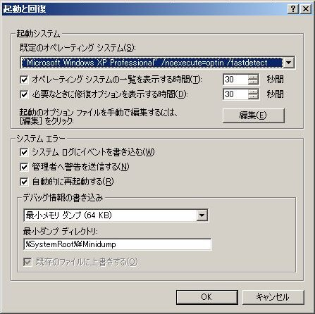
「自動的に再起動する」をオフにしてBSOD画面を表示させる＋ダンプの種類をカーネルメモリダンプに変更：
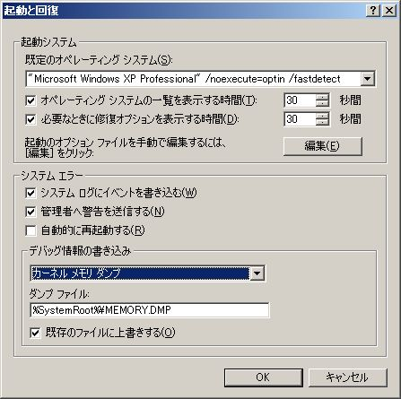
ページングファイルサイズの設定：XPModeで512MBのRAMを割り当ててあり、初期値を「推奨」以上に設定済み：
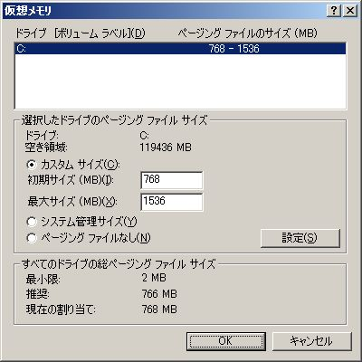
BSOD:
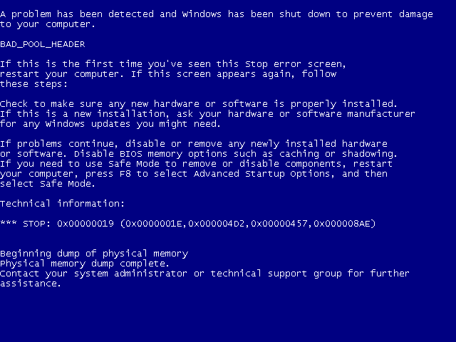
BSOD→再起動後、ログインしたあとでデスクトップに表示されるメッセージボックス：
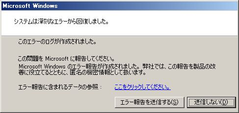
Win7での設定例
「起動と回復」設定のデフォルト：
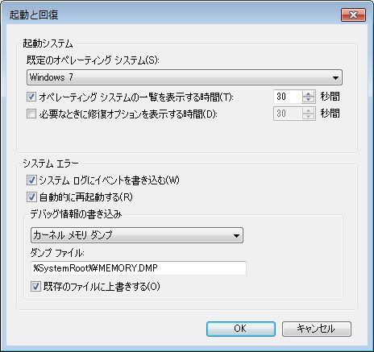
BSOD→再起動後、ログインしたあとでデスクトップに表示されるメッセージボックス：
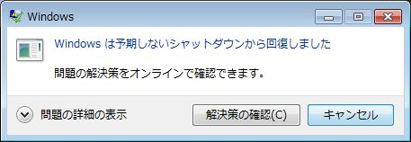
2GB以上のRAM搭載時の完全メモリダンプの取得
実験に使ったWin7は4GBのRAMを搭載している(32bitOSなので利用可能なのは3GBまで)。
このため、「起動と回復」設定からは「完全メモリダンプ」を選択できない。そもそも「デバッグ情報の書き込み」のダンプ種類を選択するプルダウンメニューに「完全メモリダンプ」の項目が無い。
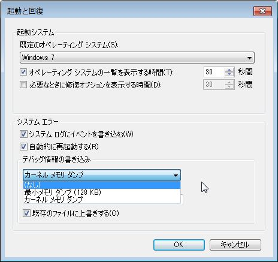
レジストリを手動で設定することで「完全メモリダンプ」にすることが出来る。
レジストリキー： HKEY_LOCAL_MACHINE\SYSTEM\CurrentControlSet\Control\CrashControl 値： CrashDumpEnabled REG_DWORD 0x1 <= 「完全メモリダンプ」
管理者として実行したコマンドプロンプトから下記のコマンドを実行することでもCrashDumpEnabledを1に変更できる。
wmic recoveros set DebugInfoType = 1
ページングファイルサイズも手動で設定しなおす。
デフォルトでは自動管理になっていた：
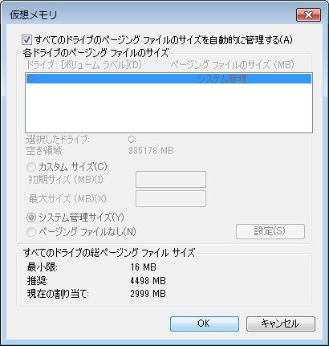
カスタムサイズにして、初期値を推奨値以上に設定し、「設定」ボタンをクリックする。「設定」ボタンのクリックを忘れると、設定値が反映されない。
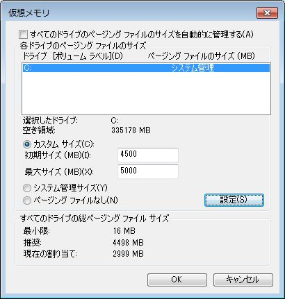
再起動後念のため確認：
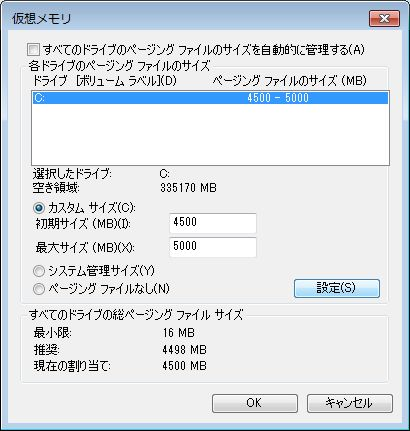
以上の設定で、完全メモリダンプが有効になる。